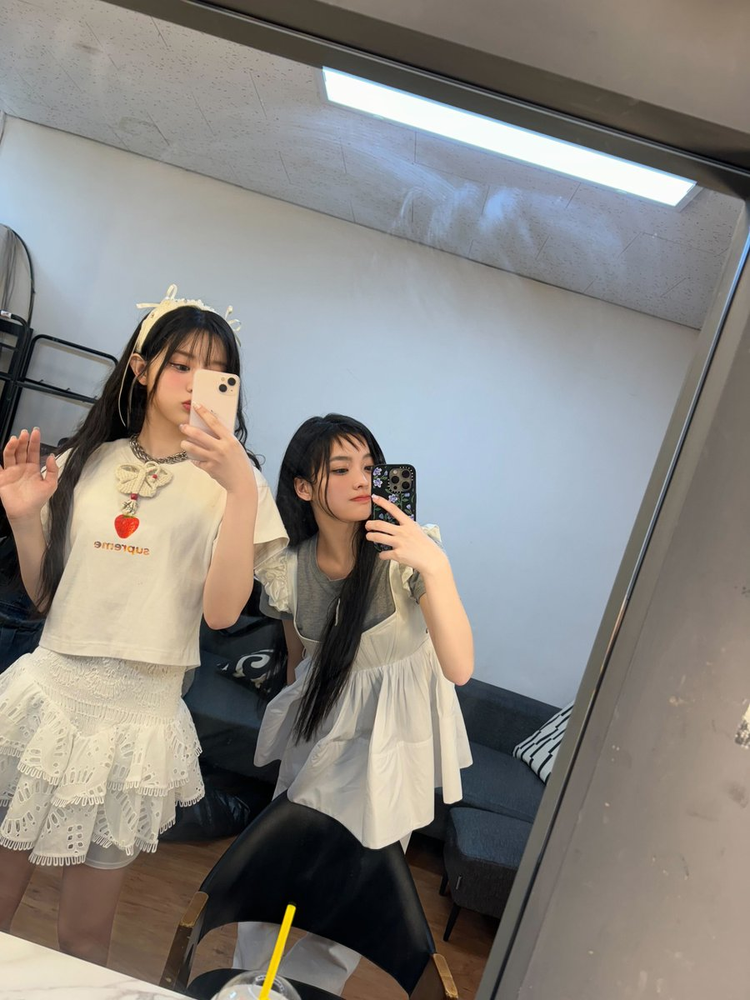

弈鸠（反酒精）
@Dream_xyuuup
RT @ILLIT_twt: 민주언니이이잉!!(•ө•)
생일 축하해요오!!!🥳🥳
항상 예쁘고 웃기고 착하구 잘하고 귀여운 민주언니 ♡
오늘도 같이 화이팅하고 초콜릿도 많이 먹고 좋은 하루로 만들어요!!🎂🎈
#IROHA #이로하 #ILLIT #아일릿…

ILLIT
@ILLIT_twt
민주언니이이잉!!(•ө•)
생일 축하해요오!!!🥳🥳
항상 예쁘고 웃기고 착하구 잘하고 귀여운 민주언니 ♡
오늘도 같이 화이팅하고 초콜릿도 많이 먹고 좋은 하루로 만들어요!!🎂🎈
#IROHA #이로하 #ILLIT #아일릿 https://t.co/7gujG8Ga4b